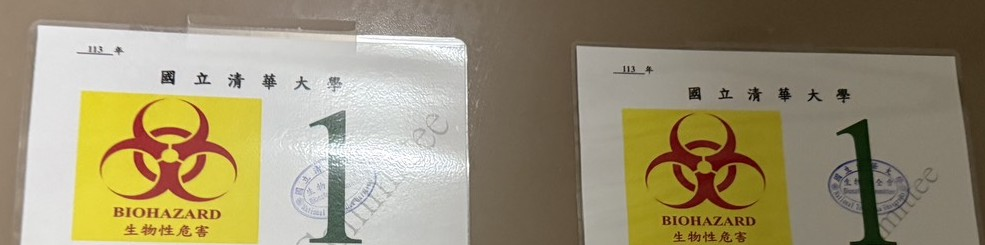

Facility labels
NTHU laboratory entrances display these BSL-1 and BSL-2 labels; location and contact details are cropped for publication. The labels identify facilities, not experiment-specific approval or authorization for field use.

Safety at a glance
The safety map connects laboratory practices, reader design controls and the laboratory-use boundary.
- Verified
- Implemented
- Restricted
Biological
Chemical
Hardware
Measurement
- Main risk
- A technically invalid or over-confident output treated as a food-safety verdict. MEAS-03–MEAS-05
- Main control
- Keep “signal detected,” “measurement valid,” and “food-safety condition confirmed” separate; this is a proposed early-screening / risk-indication architecture, not a confirmatory diagnostic. MEAS-05
People & Data
Deployment
Our safety case
The risk register connects each hazard to its consequence, control and supporting record. Risk register
- Hazard What can go wrong in biology, chemistry, hardware, data, or use.
- Possible consequence Who or what could be harmed, including a misleading measurement.
- Control Design, administrative, or interpretive barrier specified in team documents.
- Decision Continue, redesign, restrict, or stop until evidence exists.
The four layer summaries link to the complete risk register.
Sense · living-cell recognition
Biological recognition
Odorant binding is intended to raise intracellular Ca²⁺ in engineered mammalian cells that express insect OR/Orco with a GCaMP reporter. The experimental host is HEK293.
Implemented · Class II cabinet practiceLiving-cell recognition hazards: engineered mammalian culture, DH5α cloning, VOC/VUAA1/DMSO stocks, and GM waste routes.
- BIO-01 · Accidental exposure to HEK293 culture
- BIO-02 · Accidental exposure to E. coli DH5α
- CHEM-01 · VOC stock inhalation or skin contact
- CHEM-04 · DMSO or methanol stocks
- BIO-03 · Viable genetically modified material in laboratory waste
- DEP-01 · Extra-laboratory live engineered-cell cartridge
See also register: named VUAA1 (limited public toxicology) is handled with concentrated VOC / DMSO stock practice under CHEM-01 and CHEM-04 — not as a separate invented hazard ID. Incomplete inventory and electroporation remain BIO-04 / BIO-05.
Read · weak-fluorescence reader
Optical / electronic measurement
Reader safeguards include power protection, an optical enclosure and dark-baseline checks. Component calculations and design specifications are documented on Hardware.
Implemented · architectureWeak-fluorescence reader hazards: battery and power path, enclosure, ~470 nm LED dose, optical leakage, high-Z TIA integrity, and future cartridge containment.
- HW-01 · Incorrect battery charging
- HW-02 · Electrical short or abnormal load
- HW-03 · Exposed electronics
- OPT-01 · Direct viewing of ~470 nm excitation
- OPT-02 · LED heating or excess optical dose
- OPT-03 · Excitation leakage or ambient-light contamination
- MEAS-01 · PCB leakage, moisture, or contamination on a high-Z TIA
- DEP-01 · Extra-laboratory live engineered-cell cartridge
See also register: cartridge seal / leak / isolation requirements and the laboratory-only live-cell boundary are recorded under DEP-01 (and commercial living-cell distribution under DEP-02). Autoclave and sharps remain HW-04 / HW-05 in Safe to build.
Decode · validate the signal
Signal validation and interpretation
Decode starts with calibration and signal-quality checks.
Decode asks whether the digital sample is technically valid before any odor or food-risk wording.
Act · communicate the result
Risk communication and next action
A measurement instrument can be electrically cautious and still cause harm if its output is misleading. Until sufficient real-world validation exists, AeroSense is described as an early-screening and risk-indication concept, not as a standalone confirmatory food-safety diagnostic.
Restricted · extra-lab live-cell useAct limits what a number is allowed to mean: false± communication harm, confirmatory-testing language, and the laboratory-only deployment boundary.
- MEAS-03 · False negative if used for food-risk indication
- MEAS-04 · False positive if used for food-risk indication
- MEAS-05 · Invalid measurement converted into a biological conclusion
- DEP-01 · Extra-laboratory live engineered-cell cartridge
- DEP-02 · Commercial distribution of a living-cell device
- DEP-03 · Regulatory hypothesis treated as a determination
Why containment matters
Containment relies on physical barriers, trained handling and waste inactivation. HEK293 cultures are handled in controlled laboratory conditions.
Safe to build
Safe construction of AeroSense depends on biological containment, safer organism and part choices, chemical exposure control, equipment practice, and waste decontamination. Ordinary laboratory controls are marked Implemented where team documents describe them in use. Formal White List, Check-In, and authorization records remain a separate 2026 rules check.
- Biological containment BSL-2 mammalian culture with a Class II cabinet; BSL-1 practice for DH5α, as reported in the team safety record. White List eligibility is not a BSL assignment.
- Organism and part choices Laboratory K-12 cloning, a human-origin culture host, chemically synthesised receptor sequences, and standard selection markers. Final status must be checked against the current 2026 iGEM Safety and Security rules and official team submissions.
- Chemical exposure Concentrated VOC, agonist and solvent stocks are handled in a fume hood.
- Equipment practice Autoclave and sharps handling follow host-lab practice. Transfection method (electroporation versus lipid reagents) is not frozen.
- Waste decontamination Autoclave and chemical-waste routes are documented laboratory practice. Contractor pickup records are not published.
Biological materials
Rows below cover cloning, mammalian sensing and the separate exploratory Drosophila light-sheet observation. White List eligibility, Check-In need, vendor pathogen certification, and institutional BSL are different questions. Final status must be checked against the current 2026 iGEM Safety and Security rules and official team submissions. The team has confirmed HEK293 for the sensing experiments. The fly preparation belongs to a separate study; stock identity and applicable oversight records still need to accompany it.
| Material | Purpose | Risk / consideration | Containment / control |
|---|---|---|---|
| E. coli DH5α | Plasmid propagation. Laboratory K-12 derivative used for cloning. | Risk Group 1 in the team safety assessment. Operator or waste-stream exposure to cloning cultures. Laboratory-adapted K-12 strains are generally assessed as low environmental persistence; that does not authorize release. | BSL-1 standard microbiological practice: bench disinfection, no mouth pipetting, handwashing, autoclave of culture waste. Institutional BSL is separate from any White List check. |
| HEK293 | Mammalian expression host for insect OR/Orco with a GCaMP reporter. The supplied mammalian transfection and microscopy experiments used HEK293; bacterial cloning and fly imaging are separate workstreams. | Human-origin line carrying adenovirus-5 E1 DNA. Cell-stock testing and institutional handling requirements must be documented for the actual material; the name HEK293 does not establish pathogen-testing or approval status. | BSL-2 handling according to the team safety record: Class II biosafety cabinet, laboratory coat, gloves and eye protection; surface disinfection and waste decontamination. The underlying institutional assignment is not archived here. |
| Drosophila preparation | TH-GFP light-sheet imaging; preparation and acquisition are documented in Experiments. Description | Fly handling and disposal follow the host laboratory’s procedures. | Handling, containment and disposal must follow the host laboratory’s approved procedure for the actual stock and preparation. No release or field use is inferred. |
| Drosophila-derived OR/Orco sequences | Chemically synthesised odorant-receptor and Orco coding sequences used as the sensing input. | Animal-origin protein-coding genes still need a current parts / White List check. Sequence origin is not the same question as the organism inventory. | Handled as nucleic acid and as expressed protein inside contained bacterial cloning and mammalian culture. Extra-laboratory release of engineered cells is not authorized. |
| GCaMP / fluorescent constructs | Calcium-linked optical reporter (GCaMP family, with mCherry named elsewhere as a transfection marker). | Standard laboratory reporters, not toxins or virulence factors in team characterization. That characterization is not a Safety Committee finding. Animal-derived reporter parts still need a 2026 parts check. | Expressed inside the same contained mammalian culture as the receptor panel. Optical excitation of the reporter is a hardware Read-layer issue, not a wet-lab toxin issue. |
| Selection markers | AmpR for bacterial plasmid maintenance; NeoR / G418 for mammalian selection after transfection, as named in Design and Experiments. | Routine laboratory resistance cassettes, not novel or clinically critical genes in team documents. That is not the same as “no antimicrobial-resistance risk.” | Used only in contained cloning and culture. G418 powder handling is a chemical control (weighing, gloves, avoid aerosol). |
Laboratory practice and oversight
The team uses BSL-1 practices for E. coli DH5α and BSL-2 practices for HEK293. Mammalian work uses a Class II cabinet, coat, gloves and eye protection; surfaces and waste are decontaminated.
Host-lab senior researchers, the lab manager and the PI provide day-to-day supervision. The institutional contact route is the NTHU Environmental Protection and Occupational Safety and Health Center, whose staff directory includes biosafety, biosecurity and Institutional Biosafety Committee responsibilities: environ@my.nthu.edu.tw, +886-3-571-9163. Competition-specific determinations belong to safety@igem.org. [1]
Chemical safety
Chemical controls focus on concentrated stocks and the recorded DMSO, VUAA1 and G418 workflows.
| Chemical | Class | Key hazard | Control |
|---|---|---|---|
| DMSO | Solvents | Toxic; skin-permeant and can carry dissolved solutes through skin. | Specified gloves and fume-hood stock handling.Exposure, waste and source notes
P2 records DMSO as the VUAA1 solvent. The broader assay specification lists 0.1 %; that reference is not a confirmed P2 vehicle concentration. |
| VUAA1 | Research chemicals | Research chemical with limited toxicological characterisation. Treated conservatively as a potential irritant and toxicant. | Specified gloves and minimal volumes; DMSO stock handling under the solvent controls above.Exposure, waste and source notes
P2 records VUAA1 testing. The broader specification names a DMSO stock and 50 µM assay reference; agonist literature is not an SDS. [2]Jones et al., 2011 — full entry in References. |
| G418 (Geneticin) | Selection reagent | Aminoglycoside; harmful. | Specified gloves; avoid powder aerosol when weighing.Exposure, waste and source notes
Recorded for mammalian NeoR selection. A kill curve and validated selection dose remain undocumented. |
Equipment
Equipment controls cover high voltage, steam, pressure and sharps.
Electroporation
- Hazard
- A brief high-voltage pulse if this is the transfection method used.
- Procedure / control
- The safety source specifies a closed cuvette chamber and the manufacturer’s procedure, operated only by trained members. Experiments still list electroporation versus Lipofectamine 3000 versus FuGene HD as unresolved. Device, cuvette, and pulse parameters are not specified.
Autoclave
- Hazard
- Steam and pressure burns.
- Procedure / control
- Institutional operating procedure; loads cooled before removal. The SOP itself is not cited on this wiki.
Sharps
- Hazard
- Needles, blades, and glass Pasteur pipettes.
- Procedure / control
- Designated puncture-resistant containers; no recapping of needles. Container contract and inspection records are not published.
Waste
Culture waste is inactivated through the laboratory’s biological-waste route; chemical waste is segregated by stream. Waste handling
| Stream | Treatment |
|---|---|
| 01 Biological Bacterial cultures and plates | Autoclave before disposal. Genetically modified material remains contained. |
| 02 Mammalian cell culture Liquid and solid HEK waste | Disinfect, then autoclave before waste leaves the institution. Containment and inactivation, rather than culture dependence, are the barriers. |
| 03 Organic solvent / VOC Halogenated and non-halogenated chemical waste | Segregate halogenated and non-halogenated waste for institutional contractor collection. |
| 04 Gel stain Nucleic-acid stain waste, if used | If the stain is confirmed in use, collect as chemical waste; do not dispose to drains. |
| 05 Sharps Puncture-resistant containers | Use designated puncture-resistant boxes for needles, blades and glass Pasteur pipettes. |
Safe to measure
An instrument can be biologically contained and still be unsafe if it produces a technically misleading result.
Power protection, optical shielding and a clean analog front end connect operator protection with measurement quality.
Power safety
The low-voltage reader design addresses short circuits, charging faults and overheating.
- 01 USB-C 5 V input
- 02 Charger / power-path BQ24074-class reference
- 03 Battery Single-cell Li-ion / Li-polymer
- 04 5 V boost TPS61023-class reference
- 05 System Reader rails
Designed protection
- BQ24074-class charger: one-cell charging, power-path, input overvoltage protection, thermal regulation, and battery-temperature monitoring capability — datasheet features of the reference IC.
- TPS61023-class boost: load disconnect in shutdown, plus output overvoltage, thermal, and short-circuit protection features — again datasheet, not a bring-up record.
Tested evidence
| Verification item | Note |
|---|---|
| Final battery model | Identify the selected cell; a charger IC family does not identify the battery. |
| Charging current | Record charging current and compatibility with the selected cell. |
| Charging voltage | Record measured charging voltage. |
| Battery temperature | Measure pack temperature; datasheet monitoring capability is not a temperature result. |
| PCB temperature | Measure PCB temperature during charging and operation. |
| Shutdown behavior | Record the shutdown test; a designed load-disconnect feature is not a test outcome. |
| Undervoltage behavior | Record the undervoltage test. |
| Mechanical protection | Inspect the cell, wiring and enclosure for exposed conductors during normal use. |
Optical safety
Excitation uses visible blue LEDs near 470 nm (Würth 155124BS73200 class).
- 01 Source ~470 nm LED Excitation, not a laser
- 02 Enclosure Two jobs Block line of sight and reject ambient light
- 03 Sample Engineered-cell fluorescence Avoid unnecessary heating and photobleaching
- 04 Detection Photodiode Intended fluorescence only
The optical enclosure blocks direct LED viewing and reduces ambient-light contamination. These are design requirements for both eye protection and readout quality.
Electrical LED power — calculated
The 5 V / 100 Ω circuit estimate gives 12–16 mA and approximately 54 mW of electrical power per LED.
Implemented · first-order calculationOptical irradiance — not measured
Cartridge containment
The containment design separates engineered HEK293 cells from food, users, the environment and reusable electronics.
- User Sealed handling; no open living-cell cartridge in extra-lab use.
- Food product The instrument measures; it does not inoculate food.
- Environment Extra-laboratory live-cell use is not authorized on this wiki.
- Reusable electronics Physical separation from the reader; defined disposal of a damaged cartridge.
Protecting weak signals
The transimpedance amplifier uses a very high feedback resistance (LMP7721-class, RF = 100 MΩ as a starting point). At that impedance, picoampere-scale leakage looks like photocurrent. Moisture, contamination, flux residue, and unguarded leakage can therefore become a false biological signal — which is why they are safety controls, not only analog hygiene.
- Moisture Surface films create leakage paths that the TIA will amplify.
- Contamination Board dirt or sample splash can inject current that is not fluorescence.
- Flux residue Ionic residue on a high-Z node is a designed-in false-current source until cleaned and verified.
- PCB leakage Short high-impedance traces and dark-baseline measurement address PCB leakage.
- Guard design Specified guarding is both a measurement-quality and a safety barrier. Presence in layout is not a dark-current result.
- Saturation TIA or ADC clipping can look like a peak or a null. A saturation flag is specified so a clipped sample is invalid, not classified.
Calibration and QC
The readout specification carries calibration status, dark baseline, signal-to-noise ratio, saturation and invalid-measurement flags into interpretation.
Implemented · specified field listSafe to interpret
Decode and Act are safety. A cautious electrical design can still cause harm if a number is worded as biology, food clearance, or a legal certificate. Until sufficient real-world validation exists, AeroSense is described as a proposed early-screening / risk-indication architecture, not as a standalone confirmatory food-safety diagnostic.
Detection, validity, confirmation
The decision chain checks signal detection, technical validity and confirmatory testing in order.
Question 01 · filled square
Was a signal detected?
Did the reader report a change above its own display threshold?
A detected change still requires measurement validation and independent safety confirmation.
Question 02 · empty square
Was the measurement technically valid?
Did dark baseline, calibration, saturation, and SNR checks pass?
A technically valid measurement supports the screening decision.
Question 03 · dashed square
Has a food-safety condition been confirmed?
Has an independent confirmatory method established a food-safety fact?
Decision tree
A failed check stops interpretation and directs the operator to repeat or confirm the measurement.
-
Q1 · Signal detected?
If yes → Continue to validity. A detection is only Q1.
If no — stop Not a detection. That is still not a food-safety clearance and not a “safe to eat” statement. -
Q2 · Measurement technically valid?
Passed calibration, dark baseline, saturation, and SNR checks?
If yes → The number is technically usable as a risk indication input. It is not Q3.
If no — stop Invalid. Apply the measurement safety principle: do not convert this sample into a confident biological conclusion. -
Risk indication
Early-screening language only: a pattern that may warrant attention. Not a mycotoxin concentration, not a legal certificate, not a clinical result.
Next → Ask Q3 separately. Do not let this box absorb Q3.
-
Q3 · Food-safety condition confirmed?
Would require → Independent confirmatory laboratory testing and validation this wiki does not claim.
On this project — not confirmed Retest and recommend confirmatory testing. High-risk or invalid outputs should not be worded as reassurance.
False negative and false positive
If this architecture were used for food-risk indication, the two failure directions harm different people. Neither rate is published. Both are why Q1–Q3 must stay separate.
False negative
A missed real risk, including an invalid measurement displayed as “clear.” The consequence is inappropriate reassurance — the most serious communication failure for an early-warning concept.
False positive
A noisy or non-specific signal treated as a confirmed hazard. The consequence is unnecessary isolation, retesting, or disposal of food or produce.
Safety barriers in the output
Claims and evidence
Safe to deploy
Live engineered-cell work is limited to laboratory containment.
Deployment requirements
Current iGEM 2026 boundary
- Laboratory-contained wet-lab work as specified in team documents.
- Controlled biological experiments in the host laboratory.
- Controlled hardware testing of a laboratory prototype. Enclosure and cartridge are not frozen.
- No deliberate deployment of live engineered cells outside the laboratory is authorized on this wiki.
Future deployment requirements
- Validated sealed cartridge — not designed or leak-tested here.
- Leak and failure testing after cartridge freeze.
- Biological isolation from food, user, environment, and reusable electronics.
- Transport conditions for a living-cell interface.
- Disposal workflow for intact and damaged cartridges.
- Regulatory determination from a competent authority — not this wiki.
- Defined user workflow that cannot collapse Q1–Q3.
- Confirmatory-testing policy for high-risk or invalid outputs.
- Real-world performance validation. None is published.
Regulatory landscape
Competition procedures, institutional containment and commercial-product classification are separate questions. The current boundary is laboratory-contained use.
People and data
Education reports the 28-response diagnostic survey; Human Practices records industry and mentor input. Participant data are handled separately from laboratory measurements. Education · Human Practices · Safe to interpret
Survey and interview safeguards
- Voluntary participation The team reports that participation in the online survey was voluntary throughout. Interview participants spoke in a professional capacity; named publication still requires permission for attribution.
- Data minimization Collect only what the instrument needs. Education’s game study mode is documented as not collecting names, emails, ages, IPs, or school IDs. Do not add identifiers “just in case.”
- Anonymous survey collection — team reported The updated team record states that the public survey collected no names, contact details or other identifying information; anonymity was part of collection, rather than a later de-identification step. This describes the team's collection practice. Separately, the educator/study-mode export is anonymous JSON/CSV kept in the browser, with nothing transmitted automatically.
- Explicit permission for identifiable quotations Obtain explicit permission before publishing identifiable quotations or professional comments.
- Consistent analysis pipeline The team reports consolidating the survey responses into one dataset and applying the same coding, aggregation and visualization process to each question block. Education preserves item IDs and the analysis path so readers can distinguish observed responses from later Learning Lab or cohort evaluation.
Laboratory safety training is required before bench work.
Further reading: [6]
Biosecurity and dual use
AeroSense currently has low but non-zero dual-use relevance. Its modular receptor architecture is useful precisely because sensing targets can change; therefore expansion to broader pathogen-associated VOC detection or other sensitive applications should trigger renewed review. The current assessment covers contained use of common laboratory chassis, insect olfactory receptors, VOC stocks and a reconfigurable sensing architecture.
- Intended capability
- Contained heterologous expression of insect OR/Orco with a fluorescence reporter, plus a weak-fluorescence reader, aimed at plant/fungal VOC risk indication. Assay VOCs are research reagents in a laboratory, not a release pathway.
- Potential alternative use
- The same modular idea — swap the receptor, keep the readout — could, in principle, be pointed at other volatiles, including pathogen-associated markers discussed in literature and IHP exploration (for example indole as an E. coli marker). Plasmid stocks, engineered mammalian lines, and concentrated VOC stocks are dual-use-relevant materials in the ordinary laboratory sense. This page does not provide a how-to for uncontained or harmful deployment.
- Current misuse relevance
- For the documented iGEM 2026 scope — laboratory contained-use, no extra-lab live-cell cartridge, no confirmatory diagnostic claim — present misuse potential is assessed as low but non-zero. That assessment is not a security clearance and not a claim that a pathway is absent.
- Controls / boundaries
- Specified contained-use; extra-lab live cells Restricted; institutional access control for cells and plasmids as host-lab practice (SOP not cited here); public language that refuses field, clinical, and food-certificate readiness; documentation that emphasizes methods for contained research rather than actionable misuse detail. Access-control logs are not published.
- Trigger for re-review
- Renew dual-use review before: expanding into broader pathogen-associated VOC detection as an intended product; general-purpose receptor engineering offered as a swap-in library for arbitrary targets; extra-laboratory living-cell cartridges; or any documentation that would function as a deployment how-to. Exploring additional VOC targets in literature does not authorize those applications and does not make dual-use vanish.
Changes to organisms, receptor targets or deployment trigger a new safety review.
Risk register
The register documents hazards, consequences and control specifications.
Likelihood × severity: a review framework
The register contains controls and proposed verification, but no signed likelihood/severity assessment. Every hazard remains not assessed numerically. “Implemented” describes a reported control, not demonstrated residual risk. No row has a verified outcome file.
| Likelihood / Severity | 1 · Minor, reversible consequence | 2 · Consequence requiring intervention | 3 · Serious or lasting consequence |
|---|---|---|---|
| 1 · Unlikely under stated conditions | 1 × 1 = 1 | 1 × 2 = 2 | 1 × 3 = 3 |
| 2 · Plausible under stated conditions | 2 × 1 = 2 | 2 × 2 = 4 | 2 × 3 = 6 |
| 3 · Expected or recurrent under stated conditions | 3 × 1 = 3 | 3 × 2 = 6 | 3 × 3 = 9 |
A laboratory reviewer evaluates exposure, control evidence and residual risk for the specific activity.
The 30 rows retain the source control-evidence statuses, not chemical-use or approval statuses. Optical hazards are grouped under Hardware and biosecurity under Biological.
| Domain | Hazard | Possible consequence | Control | Status |
|---|---|---|---|---|
| Biological | BIO-01 · Accidental exposure to HEK293 culture | Operator contact with a human-origin line that carries adenovirus-5 E1 DNA. | Class II cabinet work for mammalian culture, as named in Experiments. Extra-lab live cells are not authorized on this wiki. | Implemented |
| Biological | BIO-02 · Accidental exposure to E. coli DH5α | Operator or waste-stream exposure to cloning cultures. | BSL-1 standard microbiological practice: bench disinfection, no mouth pipetting, handwashing, autoclave of culture waste. | Implemented |
| Biological | BIO-03 · Viable genetically modified material in laboratory waste | Cultures leaving the waste stream still viable. | Autoclave of bacterial cultures; mammalian waste disinfected then autoclaved. Containment and inactivation are relied upon. Environmental release is outside project scope. | Implemented |
| Biological | BIO-04 · Incomplete organism inventory | A missing host or animal-work item would leave waste, training, or iGEM Check-In incomplete. | The inventory covers DH5α cloning, HEK293 culture, fly imaging and synthesized receptor sequences. | Design control |
| Biological | BIO-05 · Electroporation high-voltage pulse | Operator shock. | If electroporation is used: manufacturer procedure, cuvette chamber closed before discharge, trained operators only. | Design control |
| Chemical | CHEM-01 · VOC stock inhalation or skin contact | The safety source treats this as the most realistic chemical harm: toxicity and CNS effects; some aromatics are suspected carcinogens. | Fume-hood stock preparation and dilution, smallest practical volumes, gloves, eye protection. | Implemented |
| Chemical | CHEM-02 · Cresol (methylphenol) contact | Skin burns from toxic and corrosive stocks, if this class is later stored or used. | Additional corrosive handling in the fume hood; gloves; chemical-waste stream, not drain disposal. | Design control |
| Chemical | CHEM-03 · Fire from flammable aromatics or solvents | Laboratory fire. | Flammables cabinet; VOC stocks kept away from ignition sources. | Implemented |
| Chemical | CHEM-04 · DMSO or methanol stocks | Systemic toxicity; DMSO carries dissolved solutes through skin. | Fume hood for stock handling; gloves; flammables storage for methanol if later confirmed in-use. | Design control |
| Chemical | CHEM-05 · G418 (Geneticin) powder | Harmful aminoglycoside exposure, including powder aerosol when weighing. | Gloves; avoid powder aerosol; specified weighing practice. | Design control |
| Hardware | HW-01 · Incorrect battery charging | Heating or battery damage. | Reference USB-C → charger/power-path architecture (BQ24074 datasheet features). Compatible protected cell still to freeze. | Design control |
| Hardware | HW-02 · Electrical short or abnormal load | Heating or component damage. | Reference current-limited / protected power path, including TPS61023 datasheet protection features. Power-off before open-chassis work once an SOP exists. | Design control |
| Hardware | HW-03 · Exposed electronics | Accidental short or mechanical damage. | Enclosure as a mechanical barrier. | Design control |
| Hardware | HW-04 · Autoclave steam and pressure | Burns. | Institutional autoclave operating procedure; loads cooled before removal. | Implemented |
| Hardware | HW-05 · Sharps (needles, blades, glass pipettes) | Puncture injury and contamination. | Designated puncture-resistant containers; no recapping of needles. | Implemented |
| Optical | OPT-01 · Direct viewing of ~470 nm excitation | Unnecessary eye exposure. | Visible LEDs selected rather than lasers. Final enclosure is specified to block line of sight. | Design control |
| Optical | OPT-02 · LED heating or excess optical dose | Sample heating or photobleaching that perturbs the biological measurement. | Drive only at the intensity and duty cycle required; pulsed or modulated operation is specified. | Design control |
| Optical | OPT-03 · Excitation leakage or ambient-light contamination | False fluorescence signal. | Specified filter, geometry, and baffle. | Design control |
| Measurement | MEAS-01 · PCB leakage, moisture, or contamination on a high-Z TIA | False current mistaken for biology. | Guard, cleanliness, short high-impedance traces, enclosure protection, dark calibration. | Design control |
| Measurement | MEAS-02 · TIA or ADC saturation | An invalid number presented as a result. | Specified QC / saturation flag. | Design control |
| Measurement | MEAS-03 · False negative if used for food-risk indication | Inappropriate reassurance. | Q1, Q2, and Q3 kept distinct; QC plus confirmatory-testing language; proposed early-screening / risk-indication architecture, not a standalone diagnostic. | Design control |
| Measurement | MEAS-04 · False positive if used for food-risk indication | Unnecessary isolation, retesting, or disposal. | Retest criteria and a confirmatory-testing recommendation for high-risk or invalid outputs. | Design control |
| Measurement | MEAS-05 · Invalid measurement converted into a biological conclusion | A failed Q2 treated as a food-safety fact. | Measurement Safety Principle: if the measurement is not technically trustworthy, do not emit a confident biological conclusion. Specified gates include dark baseline, SNR retention in the output (not classification-only), calibration-status fields, and an invalid / saturation flag so a failed technical gate is not classified as biology. | Implemented |
| Human / Data | HUM-01 · Untrained bench work | Procedure failure and avoidable exposure. | Institutional laboratory safety and biosafety training required before bench work; supervision specified. | Implemented |
| Human / Data | HUM-02 · Identifiable survey or interview data published without permission | Privacy harm and unwanted public attribution. | Voluntary participation; data minimization; anonymity where actually true. The publication rule is to obtain explicit attribution permission before adding named quotations or identifiable professional comments. Permission records for the existing team-synthesized interview summaries have not been supplied. | Implemented |
| Measurement | MEAS-06 · Stakeholder report treated as experimental validation | A survey answer, interview comment, or literature claim worded as an AeroSense assay result, or as a food-safety confirmation. | Claims and evidence: keep reported-to-us, inferred-by-team, literature, and experimentally validated as separate types. Q1–Q3 stay distinct. | Implemented |
| Deployment | DEP-01 · Extra-laboratory live engineered-cell cartridge | Biological exposure outside the laboratory, including to food, users, or reusable electronics. | iGEM 2026 boundary is laboratory contained-use only. Containment concept is not permission to deploy. Specified future requirements (not a field product): sealed containment, controlled insertion/removal, leak resistance, defined disposal, and physical separation from electronics. Engineered cells are not intended to be released onto or into food. | Restricted |
| Deployment | DEP-02 · Commercial distribution of a living-cell device | Unapproved distribution of contained live engineered mammalian cells. | No commercial living-cell authorization is claimed. A sealed concept is not an approved product. Regulatory determination is a future requirement. | Restricted |
| Deployment | DEP-03 · Regulatory hypothesis treated as a determination | A Taiwan device-class note, or a screening-versus-clinical distinction, worded as established law or as an authorization to deploy. | Four-layer split: documented framework / team interpretation / unresolved question / action before deployment. Label: regulatory hypothesis, not regulatory determination. | Implemented |
| Biosecurity | BIOSEC-01 · Receptor-swap or pathogen-associated VOC expansion | Dual-use relevance increases if the intended product becomes a general-purpose receptor platform or a pathogen-associated detector. | Current documented scope is contained plant/fungal VOC risk indication. Broader pathogen-associated or general-purpose receptor engineering triggers re-review. | Implemented |
AeroSafe: a reusable safety framework
We developed AeroSafe to connect the biological material, reader and interpretation workflow through one safety-control record. iGEM · Safety and Security Policies (opens in a new tab) · [7]
Core structure
Every material hazard on this page is asked the same six questions. Status is never inferred from a schematic. Deployment is a separate decision from containment design.
- Hazard What can go wrong in biology, chemistry, optics, electronics, data, or use.
- Possible consequence Who or what could be harmed — including a person who trusts a misleading number.
- Control The barrier specified in design or practice. Naming a part is not the same as showing it works.
- Verification A test, inspection, or dated record. Datasheets and drawings stay in this box until a result exists.
- Control basis: laboratory practice, design specification or use restriction.
- Choose whether to continue in the laboratory, revise the design or stop the activity.
From hazard to evidence
The risk register is AeroSafe’s worked example for this project. Risk register
Reusable outputs
Expert review
One documented design choice
We selected a pcDNA3.1(+) backbone without WPRE as a precautionary design choice. Design · iGEM · White List (opens in a new tab) · [8]
Compliance
Institutional SOPs, chemical SDS files and official iGEM safety forms govern the corresponding activities.
- iGEM Safety Forms Official Project Safety Form and Check-In Form guidance: responsibility.igem.org/safety-forms/project-safety [9] iGEM · Project Safety Form (opens in a new tab) [9] and responsibility.igem.org/safety-forms/check-in [10] iGEM · Check-In Form (opens in a new tab) [10]. Team portal submission and approval status are not verified on this wiki. No receipt, screenshot, or Safety Committee determination is published.
- White List, Check-In, and BSL These are three different questions. This page maps them as processes, not as approvals. See biological materials and Safe to deploy. No 2026 White List screenshot, Check-In receipt, or institutional BSL letter is published.
- Training roster Institutional training before bench work is laboratory practice. A dated roster, certificate pack, or named-operator list is not published. See People and data.
Safety contribution map
A navigation aid for the current Safety and Security award questions iGEM · Special Awards (opens in a new tab) [12]. The links below connect each safety contribution to its documented controls, evidence and remaining limitations.
Contribution to biosafety / biosecurity
- Question
- Did the team make a useful contribution to biosafety and/or biosecurity — tools, methods, or documented practice other teams can inspect?
- Our evidence
- AeroSafe as a project-derived safety-case chain; a dual-use review that treats relevance as low but non-zero; a precautionary WPRE omission that is not treated as a White List badge.
- Where to inspect it
- AeroSafe, Biosecurity, Design
- Remaining gap
Platform suitability
- Question
- Is the chosen biological and hardware platform suited to a contained living-cell sensor, and are its limits stated?
- Our evidence
- Laboratory-contained DH5α cloning and mammalian OR/Orco expression as specified; extra-lab live cells Restricted; Q1 ≠ Q2 ≠ Q3 so the reader cannot finish a food-safety fact.
- Where to inspect it
- Safe to build, Safe to interpret, Safe to deploy
- Remaining gap
Building on existing knowledge / tools
- Question
- Did the team use current iGEM safety processes and existing technical sources without treating them as assembled proof?
- Our evidence
- iGEM White List, Check-In, and release-beyond-containment guidance cited as processes, not as team approvals. Hardware ICs are cited from manufacturer datasheets, with the explicit caveat that a datasheet is not a bring-up result Texas Instruments · BQ2407x datasheet (opens in a new tab) [13].
- Where to inspect it
- Safe to measure, References. Hardware
- Remaining gap
Management of project risks
- Question
- Did the team identify hazards across wet lab, hardware, measurement, people, and deployment, and say what is still untested?
- Our evidence
- Interactive risk register plus specified wet-lab, hardware, measurement, and deployment controls. Empty likelihood scores are not treated as zero risk. No row is marked Verified.
- Where to inspect it
- Risk register, Safe to build, Safe to measure
- Remaining gap
Real-world synthetic biology use
- Question
- Did the team treat extra-laboratory use, food-safety claims, and human data as separate from laboratory contained-use?
- Our evidence
- Obtain explicit permission before publishing identifiable quotations or professional comments.
- Where to inspect it
- Safe to deploy, People and data, Education
- Remaining gap